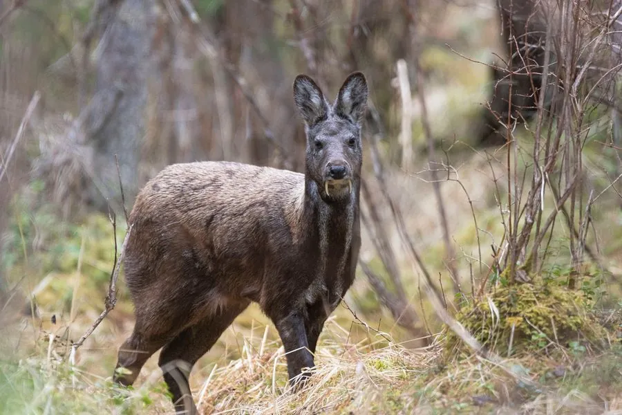

哺乳动物 · 动物界
原麝 Moschus moschiferus

东北亚针叶林中的小型鹿类，雄兽有外露獠牙、腹部有麝香腺，能分泌名贵麝香，因盗猎和栖息地丧失而受威胁。
- 分类
- 门脊索动物门纲哺乳纲目偶蹄目科鹿科属麝属
- 栖息环境
- 山地针叶林、混交林与岩壁
- 地理分布
- 俄罗斯西伯利亚、蒙古、朝鲜半岛及中国东北、华北的山地
- 保护级别
- IUCN 易危（VU）；中国国家一级保护动物
物种志
原麝体长 0.65–0.9 米，肩高 0.5–0.6 米，体重 8–15 kg，体型小而粗壮。它没有角，雄兽的上犬齿发达，向下外露形成獠牙；被毛为深褐至暗棕色，背部有浅色斑点，四肢细长，后肢明显长于前肢，尾巴极短。
原麝分布于俄罗斯西伯利亚、蒙古、朝鲜半岛和中国东北、华北的针叶林与混交林，栖息于海拔较高的山地针叶林和岩壁。它以苔藓、地衣、树叶、嫩枝和灌木为食，多在晨昏单独活动，善跳跃和攀爬。雄兽腹部的麝香腺能分泌麝香，用于标记领地，因麝香被用作香料和药材，原麝长期遭到盗猎。雌性妊娠期约 6–7 个月，每胎 1–2 仔。由于过度捕猎和栖息地破坏，原麝被列为易危，中国将其列为国家一级保护动物。
形态与习性
- 食性苔藓、地衣、树叶、嫩枝与灌木
- 体长0.65–0.9 m，肩高 0.5–0.6 m
- 体重8–15 kg
- 寿命野外约 10–12 年
- 繁殖妊娠期约 6–7 个月，每胎 1–2 仔
- 麝香腺雄兽腹部有腺体，可分泌麝香
- 犬齿雄兽上犬齿发达，外露形成獠牙
趣味知识
- 原麝没有角，雄兽却长有外露的獠牙状上犬齿。
- 雄兽腹部的麝香腺能分泌名贵的麝香，用于标记领地。
- 原麝善跳跃和攀爬，多在晨昏单独活动。
- 因盗猎和栖息地破坏，中国将原麝列为国家一级保护动物。